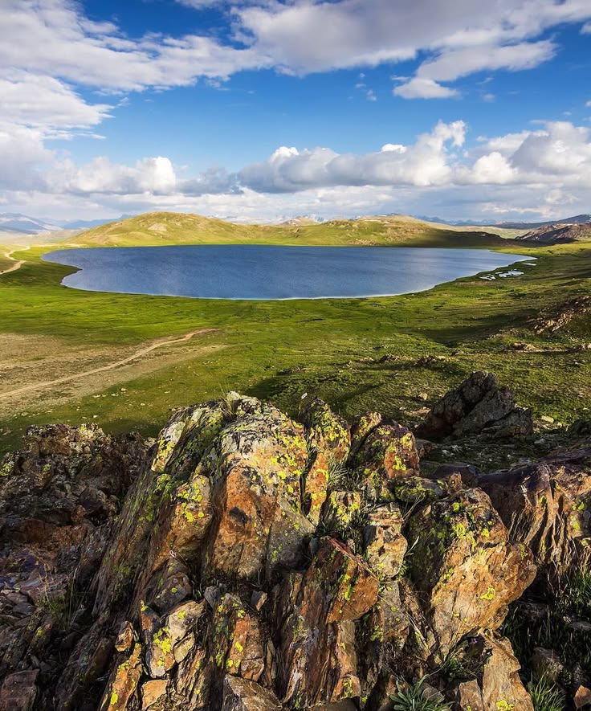

LAKE SAIF-UL-MALOOK

ATTABAD LAKE

SHEOSAR LAKE

Discover Pakistan’s Stunning Lakes
Pakistan’s northern mountains and valleys are home to many stunning natural lakes, most of which are glacial or alpine in origin. These lakes are known for their clear blue waters, scenic surroundings, and tourism appeal.
